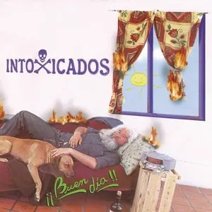
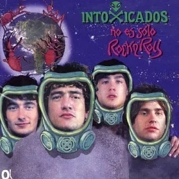
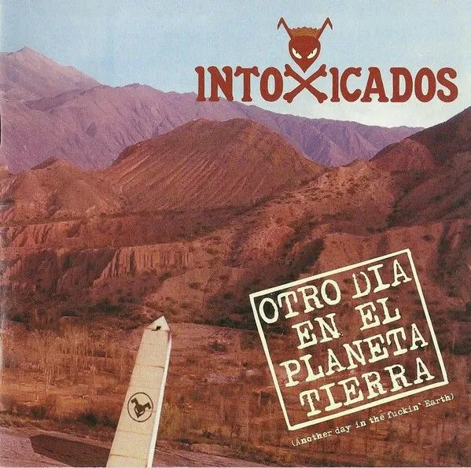
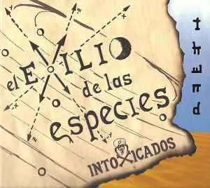

Somos el rock argentino, somos la voz de la calle
Intoxicados es una banda de rock argentino formada en 1994 por el músico Cristian "Pity" Álvarez. Con un sonido crudo y letras que reflejan la realidad de las calles argentinas, la banda se convirtió en un ícono del rock nacional.
Sus canciones hablan de la vida cotidiana, los problemas sociales y las experiencias del barrio, conectando profundamente con su audiencia. Temas como "Fuego", "Necesito" y "Felicidad Depresión" son himnos del rock argentino contemporáneo.
Buen dia (2001)
"Buen día" marca un momento crucial en la carrera de Intoxicados. Este álbum consolidó a la banda como una de las voces más auténticas del rock argentino de principios de los 2000. Con temas como "Mi inteligencia Intrapersonal" y "Quieren Rock", el disco captura la esencia cruda de la calle y la rebeldía juvenil. La producción mantiene ese sonido directo y sin pulir que caracteriza a la banda, haciendo que cada canción suene como si estuviera siendo tocada en vivo en un pequeño bar del conurbano. "El Rey" se convirtió en un himno instantáneo, mostrando la capacidad de Pity Álvarez para escribir letras que conectan directamente con la realidad de los barrios argentinos.
| Buen dia | |
|---|---|
|  |
|
No es solo rock and roll (2003)
"No es solo rock and roll" es quizás el trabajo más reconocido de Intoxicados. Con "Fuego" y "Necesito" como himnos generacionales, este álbum llevó a la banda a nuevas alturas de popularidad. La energía salvaje de "Nunca quise" contrasta perfectamente con momentos más melódicos como "Fuiste lo mejor". El disco es una declaración de principios: aquí el rock no es solo entretenimiento, es una forma de vida, una manera de expresar la angustia y la alegría de vivir en los márgenes. "Señor kiosquero" se convirtió en un clásico instantáneo, mientras que temas como "Hermano tolueno" abordan sin filtros las realidades más duras del barrio.
| No es solo rock and roll | |
|---|---|
|  |
|
Otro dia en el planeta tierra (2005)
Este álbum representa la maduración artística de Intoxicados sin perder su esencia callejera. Con "Felicidad Depresión" como uno de sus temas más emblemáticos, el disco explora las contradicciones de la vida cotidiana con una honestidad brutal. Canciones como "Está saliendo el sol" y "No tengo ganas" muestran una banda que ha encontrado su voz y no tiene miedo de hablar sobre los altibajos de la existencia. El álbum mezcla rock potente con momentos más introspectivos, creando un viaje emocional que resonó profundamente con toda una generación. La inclusión de "Reggae para los amigos" demuestra la versatilidad musical de la banda.
| Otro dia en el planeta tierra | |
|---|---|
|  |
|
El exilio de las especies (2008)
El último álbum de estudio de Intoxicados muestra a una banda en plena evolución. "El exilio de las especies" tiene un tono más oscuro y reflexivo, como si la banda estuviera procesando todo lo vivido en años de gira y experiencias. "Casi sin pensar" se destaca como uno de los temas más emotivos del disco, mientras que "Pila Pila" mantiene esa energía rockera característica. Con "Comandante" y "África", el álbum experimenta con sonidos más diversos sin abandonar la identidad que hizo grande a la banda. Este disco representa el cierre de una era dorada del rock argentino, capturando tanto la rabia como la melancolía de una banda que siempre supo expresar lo que muchos sentían pero no podían decir.
| El exilio de las especies | |
|---|---|
|  |
|